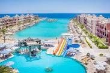
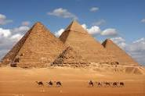
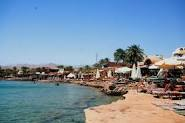
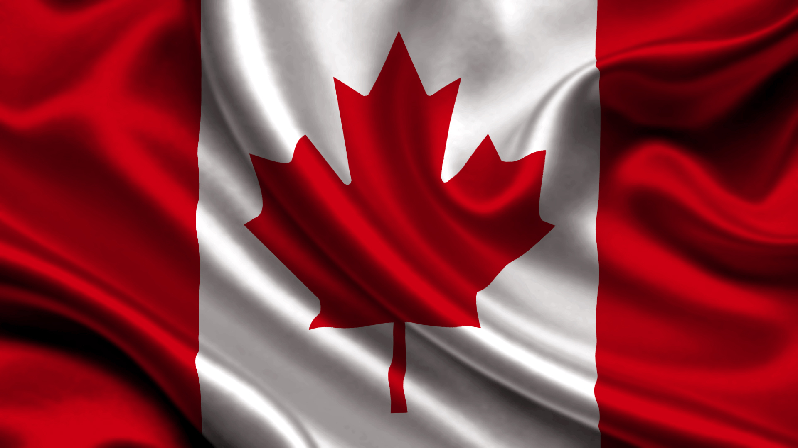

Египет — страна, сказочно богатая памятниками древней культуры, народ которой по праву гордится своей многовековой историей. Быстрый рост населения ставит на повестку дня решение таких насущных проблем, как
внедрение передовых агротехнологий и развитие индустрии. Крупные инвестиции преобразуют облик страны и жизнь ее граждан. Символом этих перемен стало возведение Асуанской плотины — панацеи от всех бед Египта. К сожалению,
плотина нарушила годичный цикл разливов Нила, которому страна испокон веков была обязана своим существованием и могуществом.
Иероглифы (знаки египетского письма) применялись для написания священных текстов и украшения памятников. В быту использовалось упрощенное письмо. Первым иероглифы в 1822 г. прочитал француз Жан-Франсуа Шампольон, положивший начало современному этапу изучения
культуры Древнего Египта.
На песчаном плато неподалеку от Гизы вздымаются в небо три величавых пирамиды — Хеопса, Хефрена и Микерина. Эти гробницы, воздвигнутые до 2500 г. до н. э., поражают грандиозностью замысла и точностью исполнения, оставаясь единственным из дошедших до нас
семи чудес света. Пирамиды строились из огромных каменных блоков, доставлявшихся с соседнего плато. На месте древних каменоломен ныне возлежит исполинский Сфинкс — символ фараона; Хефрена. Некогда пирамиды были облицованы полированными плитами
известняка, но почти все они пошли на постройку домов в Каире. Гранит, которым выложены погребальные камеры, привозили из Асуана (800 км выше по течению Нила).
У древних египтян существовала сложная система религиозных верований. Почти каждое божество почиталось в виде какого-либо животного.
Важнейшие боги Древнего Египта:
Амон — царь всех богов, изображался в образе барана;
Анубис — бог мёртвых в облике шакала либо человека с головой шакала или дикой собаки;
Апис — бог Нила, символ плодородия, ему поклонялись в образе быка;
Гор — покровитель фараонов, бог света с головой сокола;
Осирис — бог-владыка мира, бог жизни, изображавшийся в виде мумии с короной, скипетром и плетью;
Ра — бог солнца;
Сет — бог-разрушитель, владыка пустынь и оазисов;
Шу — бог воздуха, олицетворение атмосферы.
КЛИМАТ
Климатические зоны расположены широкими поясами с севера на юг. На побережье Средиземного моря господствует субтропический климат, на остальной территории — тропический пустынный. Температура января держится в пределах 9-19°С, а летом на юге достигает
+33°С (местами — до +49°С). Для пустынных регионов типичны значительные суточные перепады температур. Если днём солнце прогревает песок до 50-60°С, то по ночам нередки заморозки. На севере за год выпадает 50-100 мм осадков, а на границе с
Суданом дожди — большая редкость. Для весенних месяцев характерен сильный сухой ветер хамсин, дующий из пустыни. Климат Египта далеко не всегда был таким. Тысячи лет назад здесь простирались травянистые саванны, в которых обитали антилопы,
львы и гепарды. Ныне сильно оскудевшая флора и фауна сосредоточена в долине Нила и оазисах.

Вид на отель
ИЗ ГЛУБИНЫ ВЕКОВ
Египетская цивилизация — одна из древнейших. Основы могущества были заложены в III тысяче летии до н.э. с объединением Верхнего и Нижнего Египта. 1085 гг. до н. э.) царств. В I тысячелетии до н. э. страна, раздираемая усобицами, утратила независимость
Эпоха Древнего Царства (2850- 2052 гг. до н.э.) ознаменовалась расцветом монументальной архитектуры, воплотившейся в исполинских храмовых комплексах и пирамидах Гизы. Наивысшего могущества Египет достиг в эпоху Среднего (2052-1570 гг. до н. э.)
и Нового (1570-1085 гг. до н. э.) царств. В I тысячелетии до н. э. страна, раздираемая усобицами, утратила независимость. В 671 г. до н. э. Египет покорили ассирийцы, в 525 г. до н. э. — персы, а в 332 г. до н. э. — войска Александра Македонского.
Период относительной стабильности под властью Птолемеев (305-30 гг. до н. э.) завершился вторжением римских легионов. После падения Римской империи и ослабления византийского влияния Египет захватили арабы (641 г.) С XVI в. страна входила во владения
Османской империи, хотя со временем и пользовалась значительной автономией. В 1882 г. Египет колонизовали англичане, стремившиеся взять под свой контроль Суэцкий канал. В 1922 г. страна обрела независимость, но зона канала находилась под британской
оккупацией до 1956 г.

Пирамиды
НА СТЫКЕ КУЛЬТУР
Географическое положение и богатая история Египта отразились в этнической структуре его населения. Большинство египтян — арабы, но в их культуре заметны греческое, иудейское и римское влияние. На крайнем юге живут негроидные племена, а в западных пустынях
берберы. В этом пестром котле очень непросто отыскать потомков древних египтян, хотя многие считают таковыми христиан-коптов, сохранивших не только культурную и религиозную самобытность, но и церковный язык — живой отголосок языка фараонов. Свой
вклад в египетскую культуру вносили не только завоеватели, но и покорённые народы. Особое место занимает древнеегипетская эпоха, одарившая нас уникальными творениями искусства. При Птолемеях влияние эллинистической культуры усилилось настолько,
что даже мумии той эпохи имеют греческие черты. Однако наибольшую силу возымело арабское влияние, проявившееся в смене религии. Мечетинередко возводились из разобранных древних построек (в т. ч. пирамид Гизы). Многовековое арабское владычество
обеспечило исламу безусловное господство
Верблюды
БЕЛОЕ ЗОЛОТО
Рыбоводство и рыболовство. В Суэцком заливе ловят сардину, но в дельте Нила объёмы её вылова заметно сократились после введения в строй Асуанской (1971 г.) плотины. По этой же причине не только резко уменьшилась масса приносимого паводками плодородного
ила, но и оскудели рыбные запасы Средиземного моря. Впрочем, это далеко текстильная промышленность, а также добыча газа, нефти и фосфоритов. Добывающая отрасль не так развита, как в соседних арабских странах, да и залежи здесь беднее. В этом главная
причина отрицательного платёжного баланса страны и роста внешней задолженности.
Ежегодно в Египет приезжают свыше 3,5 млн. туристов — в основном из Северной Америки, Ближнего Востока и Западной Европы. Для страны, столь щедро одарённой природными красотами и памятниками культуры, это очень мало. Главной помехой развитию туризма стали
теракты и похищения заложников, организованные исламскими экстремистами. Тем не менее многих гостей неудержимо влекут шедевры древней архитектуры и искусства. Знакомство со страной следует начать с основанного в 1857 г. в Каире Египетского музея,
где хранится богатейшее собрание древностей эпохи фараонов. В XVIII- XIX вв. многие ценные находки были вывезены за границу. Яркую страницу в историю изучения египетской культуры вписали выдающиеся археологи — О. Мариетт, У. Питри и Г. Картер.
Полюбовавшись пирамидами, толпы туристов посещают Мемфис, Долину царей, Фивы, Луксор. Большой популярностью пользуются джип-сафари по пустыне, верховые прогулки на верблюдах и дайвинг в Красном море.

Пляж
Канада

Одна из самых экономически развитых стран мира. В ее городах жизнь бьет ключом, к небесам взметнулись громады небоскребов из стекла и бетона, а вокруг царит первозданная тишина степей, лесов и гор, вечный покой нетронутой природы. Со стороны Канада с
ее огромными незаселенными пространствами может показаться почти безлюдной.
КЛИМАТ
В следствие большой широтной протяженности и меридионального расположения географических зон климат Канады чрезвычайно разнообразен. Горные хребты Кордильер ограничивают приток тихоокеанских воздушных масс, зато холодный арктический воздух беспрепятственно
проникает в южные регионы страны. На западном побережье климат смягчается под влиянием теплого Северо-Тихоокеанского течения. В Скалистых горах царит типичный горный климат. Самые обильные осадки выпадают на западе Канады - нередко свыше 2500
мм в год. Центр и восток страны получают гораздо меньше атмосферной влаги — не более 500 мм за год. В центральной части, где осадки довольно скудны и быстро испаряются, раскинулись травянистые прерии. В холодной приполярной зоне, где среднемесячные
температуры не превышают 10° С, преобладает заболоченная тундра. Климат Восточной Канады умеренно-теплый. Среднегодовая сумма осадков превышает 1000 мм при их равномерном распределении по всем месяцам года. Средняя температура июля составляет
около 20°С. Зимы холодные — в течение трех с лишним месяцев столбик термометра держится ниже 0° С.
ОЗЕРА И РЕКИ
При взгляде на карту Канады поражает обилие больших и малых озер. Площадь самого крупного Большого Невольничьего озера составляет 31,1 тыс. км2. Огромные озера на окраинах Лаврентийской возвышенности лежат в тектонических впадинах, но большинство имеют
ледниковое происхождение. Самая длинная река - Макензи (под этим именем она течет из Большого Медвежьего озера в Северный Ледовитый океан) образована слиянием рек ПисРивер и Атабаска, берущих начало в Скалистых горах. Площадь ее бассейна составляет
1,76 млн. км2, а длина - 4240 км. Канадские реки, принадлежащие в основном к бассейну Атлантического океана, текут по весьма пересеченному рельефу и изобилуют порогами и водопадами, которые затрудняют судоходство.
ИНТЕРЕСНЫЕ ФАКТЫ
С 1858 г. столицей Канады является основанная в 1827 г. Оттава. Вместе с соседним городом Халл она образует крупную метрополию.
Значительную часть территории Канады занимают озера, большинство из которых имеют ледниковое происхождение.
Бесчисленные озера и реки Канады, входящие в обширную сеть поверхностного стока, образуют взаимосвязанные озерно-речные системы.
Около половины территории Канады занимает Лаврентийская возвышенность, западную границу которой образует линия между Большим Медвежьим озером на севере и Лесным озером на крайнем юге. Геологи называют эту обширную зону Канадским щитом. Средняя высота
местного ландшафта составляет около 500 м, однако по окончании ледникового периода кое-где обнажились остатки древних складчатых гор высотой до 1190 м. Лаврентийская возвышенность лежит в бассейне Атлантического океана и славится своим живописным
озерно-холмистым рельефом. Центральную часть Канадского щита заполняет Гудзонов залив. На его берегах раскинулась одноименная низменность, возникшая в результате поднятия рельефа и отступления моря после таяния ледников. Сравнительно недавние
тектонические процессы привели к формированию Арктического архипелага. На территорию Канады заходят окраинные хребты американских Аппалачей. Они окаймляют с юга долину реки Св. Лаврентия и торчат острыми зубцами островов близ восточного побережья.
Эти старые, расчлененные обрывистыми ущельями горы образуют систему небольших плато высотой не более 800 м. Многообразие горных пород и геологических структур предполагает наличие в этих краях богатых минеральных ресурсов. Высшая точка этой части
Аппалачей — г. Жак-Картье (1268 м). На стыке Лаврентийской возвышенности и Аппалачей лежит долина реки Св. Лаврентия, представляющая собой тектоническую депрессию.
ПРИРОДА
Лежащую на Крайнем Севере зону арктических пустынь по мере продвижения к югу сменяет тундра, начинающаяся от кромки вечных снегов. В холодном климате на скованной вечной мерзлотой почве выживает лишь скудная тундровая растительность — однолетние травы
и кустарнички. Далее к югу тундра переходит в редколесье, а затем в широкую полосу бореальных лесов. В таежных массивах преобладают хвойные породы, и только на юге появляются незначительные вкрапления лиственного древостоя. На побережье обитают
тюлени и моржи, а на Крайнем Севере — белые медведи. К типичным жителям тундры относятся также северные олени, полярные зайцы, песцы и лемминги, а из птиц — полярные совы и тундровые куропатки. В зоне тайги обитают лоси, олени вапити, красные
белки, летяги, дикобразы, куницы и бобры. Для смешанных лесов характерны такие крупные хищники, как медведь барибал, гризли, волк, рысь и росомаха. Реки и озера богаты рыбой.
ЭКОНОМИКА
Под сельскохозяйственными угодьями в Канаде занято около 74 млн. га (средняя площадь одной фермы - свыше 240 га). В стране существуют два крупных аграрных района. Первый расположен на плоских равнинах по берегам Великих озер и в долине реки Св. Лаврентия.
Здесь выращивается вся канадская кукуруза и соя, 90% винограда и табака, а также добрая половина картофеля и овощей. Этот же регион поставляет на национальный рынок 50% молока и яиц. Вторая по значению аграрная область - это прерии, знаменитые
высокими урожаями пшеницы и развитым животноводством. Прекрасная сырьевая база служит надежной основой для развития лесного хозяйства. По некоторым оценкам Canada владеет более чем 9% всех лесных площадей планеты. С лесозаготовками и деревообработкой
непосредственно связано современное целлюлозно-бумажное производство. Одной из старейших отраслей национальной экономики является рыболовство. Значительную часть улова получают в прибрежных водах Атлантики и Тихого океана, хотя внутренние водоемы
тоже имеют немаловажное промысловое значение. Владея богатыми запасами полезных ископаемых, Canada занимает первое место в мире по добыче никелевых и цинковых руд. В стране имеются крупные месторождения меди, железа, золота, свинца и молибдена,
а каменный уголь является одной из ведущих статей экспорта. Добываемый в стране уран используется как топливо для АЭС. Ведется разработка залежей природного газа и нефти.
Мощный импульс развитию канадской экономики дала II мировая война. В стране выросла военная промышленность, возник ряд новых отраслей, усилился приток американских инвестиций, развернулась широкомасштабная торговля между соседними государствами. Углубление
американо-канадской экономической интеграции продолжается и сегодня. США выступают главным экспортным партнером Канады, а около 30% канадских предприятий принадлежат американским компаниям.
КОРЕННЫЕ ЖИТЕЛИ И ПОСЕЛЕНЦЫ
Коренные жители Канады — индейцы и эскимосы. Большинство индейского населения рассеяно по таежным резервациям, и определенная их часть по-прежнему живет за счет охоты и рыболовства. Основное занятие эскимосов, населяющих северное побережье Канады, Баффинову
Землю и полуостров Лабрадор - морское рыболовство. Национальный состав и размещение населения сложились в результате начавшейся в XVI веке колонизации этой части континента европейскими поселенцами. Не одну сотню лет эти края были ареной жестокого
противоборства английских и французских колонистов. Если французы селились в долине реки Св. Лаврентия, то англичане прочно обосновались на Ньюфаундленде, в Новой Шотландии и в районе Великих озер. Тем не менее к исходу XIX века была освоена лишь
ничтожно малая часть территории Канады, и только прокладка трансконтинентальной железной дороги дала толчок массовому заселению прерий. В те годы Canada приняла несколько миллионов иммигрантов .из Западной и Восточной Европы, в т. ч. выходцев
из Украины.
Провинции и территории Каналы (в скобках адм. центры):
Альберта (Эдмонтон)
Британская Колумбия (Виктория)
Манитоба (Виннипег)
Ньюфаундленд (Сент-Джонс)
Новая Шотландия (Галифакс)
Нью-Брансуик (Фредериктон)
Онтарио (Торонто)
Квебек (Квебек)
Саскачеван (Риджайна)
О. Принс-Эдуард (Шарлоттаун)
Северо-Западные территории (Йеллоунайф)
Территория Юкон (Уайтхорс)
Италия
Флаг Италии
Любой турист найдёт для себя в Италии что-нибудь по душе. Знатоки искусства будут восхищаться бесчисленными шедеврами зодчества и живописи. Гурманов пленит умение итальянцев готовить вкуснейшие блюда из самых простых продуктов, а любителей природы ждут
прекрасные ландшафты, которыми славятся все области Италии.
Италия — государство на юге Европы. Большую часть территории занимает Апеннинский полуостров, омываемый водами Средиземного, Лигурийского, Тирренского, Ионического и Адриатического морей. На севере границы Италии
проходят по Альпам, а на юге охватывают острова Сицилия, Сардиния, Пантеллерия, а также Липарские, Тосканские (самый крупный остров — Эльба), Понцианские и Пелагские острова. В Швейцарии существует крохотный итальянский
анклав Кэмпионе, а в самой Италии — два суверенных государства: Сан-Марино и Ватикан. В силу сложной геологической структуры рельеф страны весьма разнообразен. Север Италии занимают Альпы, у их подножия лежит Паданская
равнина, а основной костяк полуострова образуют средневысотные Апеннины. Небольшие равнины встречаются лишь в узкой прибрежной полосе, а кое-где горы подступают прямо к морю.
Горы не изолируют Италию от остальной Европы. Через важнейшие перевалы проложено немало шоссейных и железных дорог, а в скалах пробиты многокилометровые туннели.
СЛЕДЫ ИСТОРИИ
В древнейшие времена Апеннинский полуостров населяли лигуры, затем италики и этруски. В VII в. до н. э. пришедшие на эти земли латины и сабины основали Рим — столицу республики, а позднее — великой империи. В период наивысшего расцвета Римская империя
простиралась от песков Сахары до северных рубежей Англии. Мы и сегодня восхищаемся строгой архитектурой античных городов, центром которых была главная площадь — форум. Городские улицы были вымощены и снабжены
системами канализации, вода для жителей подавалась по акведукам. Между городами пролегала густая сеть дорог, а берега рек соединяли арочные каменные мосты. После крушения империи политическое единство Италии
на долгие века было утрачено. На севере сложилась пёстрая мозаика феодальных княжеств и городов-республик, постоянно враждовавших между собой, Центральная Италия оказалась под властью пап, а югом владели сначала
норманны, затем немцы, французы и испанцы, которым приходилось отбивать частые набеги сарацин. Несмотря на политическую раздробленность, средневековые города-государства процветали, всемерно поощряя развитие
культуры. Под покровительством знатных меценатов во Флоренции жили и творили великие мастера Возрождения Боттичелли и Микеланджело, в Падуе — Мантенья, а в Венеции — Тициан. В XIX в. движение за политическое
объединение Италии возглавило Сардинское королевство. В 1859—70 гг. король Сардинии Виктор Эммануил II объединил под своей властью почти всю страну и принял титул короля Италии. В 1861 г. столицей государства
стал Турин, с 1865 г. — Флоренция, а с 1871 г. — Рим.
Ни в одной стране Европы контрасты между разными регионами не проявляются с такой силой, как в Италии. Богатый, экономически развитый Север разительно отличается от бедного и отсталого Юга, роскошь современного Милана — от грязных предместий Неаполя.
Глубокие различия наблюдаются не только в состоянии экономик обоих регионов, но также в менталитете и образе жизни северян и южан. К примеру, на улицах Неаполя нет и намёка на строгую дисциплину, присущую миланским
водителям и пешеходам. Здесь полоса встречного движения — понятие чисто условное, зато каждый сидящий за рулём усердно жмёт на клаксон. Все типичные черты национального характера итальянцев — открытый нрав,
сердечность и бурный темперамент— на Юге проявляются с удвоенной силой. Если Север славится высоким уровнем развития индустрии, сельского хозяйства и лучшими в стране учебными заведениями, то отсталый Юг не
располагает ни современными технологиями, ни кадрами специалистов и в течение многих лет служит аграрно-сырьевым придатком Севера. Скудных инвестиций ведущих концернов ("FIAT", "OLIVETTI") недостаточно для того,
чтобы вырвать из тисков нищеты беднейшие регионы страны. Большое влияние на хроническое отставание Юга оказывает местная мафия, прочно вросшая во все государственные структуры. Огромные целевые средства, выделенные
на развитие экономики южных областей, попали в руки организованной преступности и коррумпированных политиков. Попрание закона, безработица и террор — такова суровая реальность Юга Италии.
В северных областях Италии производится 68% национального дохода, а когда в южных — только 32%.
СРЕДИЗЕМНОМОРСКИЙ КЛИМАТ
Италия лежит в зоне мягкого средиземноморского климата, который в силу большой долготной протяжённости страны переходит от умеренного к субтропическому. Речная сеть довольно густая, но реки небольшие, уровень воды подвержен сильным колебаниям, а летом
многие полностью пересыхают. В далёком прошлом по всей Италии росли густые леса. Ныне они занимают лишь около 21% территории страны. В древостое преобладают сосны, пинии и дубы, а в горах — буки и пихты. Достойным
украшением итальянского пейзажа служат стройные кипарисы, пальмы и опунции. Там, где раньше были леса, теперь заросли олеандра, самшита, фисташки и можжевельника.
ЗОЛОТО АПУЛИИ
Благодатная природа и тёплый климат создают отличные условия для развития сельского хозяйства. Ведущие аграрные регионы — Паданская равнина, Тоскана и Апулия. На Севере преобладают крупные современные хозяйства, на Юге — мелкие малопродуктивные фермы.
На Севере выращиваются в основном зерновые культуры, на Юге — виноград и оливки. Оливковое масло — важнейший компонент средиземноморской кухни. Итальянцы называют его «золотом Апулии», восхищаясь золотистым
цветом, густотой и вкусом. Некоторые оливковые рощи Апулии плодоносят свыше 1000 лет. Деревьям не страшны ни ветер, ни засуха, а их стволы искорёжены не только от старости — просто фермеры срезают куски коры,
чтобы омолодить старые деревья.
СТРАНА МАКАРОН
Италия — настоящее королевство мучных блюд. Основу меню составляют макароны («паста»). Скорые на выдумку итальянцы дают им самые причудливые названия: «Волчьи глаза», «Волосы ангела», «Глаза куропатки». Родиной макарон считается Кампания. Именно здесь
появились первые семейные фабрики по их производству. Сегодня каждая из них выпускает 100—200 сортов макарон, бережно храня старые традиции, фирменную рецептуру и форму изделий. Итальянская кухня принадлежит
к числу лучших в Европе. Особого внимания гурманов заслуживает богатейший выбор сезонных и региональных рецептов пиццы, ризотто и блюд из даров моря. Богатые традиции, корнями уходящие ещё в античные времена,
имеет также виноделие.
КУРОРТЫ И ОТДЫХ
Апеннинский полуостров богат целебными источниками минеральных вод, которые с незапамятных времён используются в лечебных целях. Самые известные бальнеологические курорты находятся в Тоскане, Лацио и Кампании. В национальном парке Абруцци обитают исконные
представители апеннинской фауны: бурые медведи, волки, серны, рыси и олени. Однако наибольшей популярностью среди туристов пользуются многочисленные приморские курорты — например, Ривьера-ди-Поненте с центром
в Сан-Ремо.
ГОРОДА
Жемчужину Адриатики Венецию часто называют одним из красивейших городов мира. Она была основана ещё в IV в., когда на болотистых островах Венецианской лагуны поселились люди, спасавшиеся от нашествий варваров. Все внутригородские перевозки осуществляются
моторными судами, баржами и гондолами. К сожалению, Венеция медленно, но неотвратимо погружается в море. В построенных на воде зданиях рушится кладка, старинные фрески блекнут от сырости и загрязнённого воздуха.
В настоящее время разрабатывается план спасения города и его памятников, которые считаются самыми ценными в Италии. Речь идёт прежде всего о Дворце дожей, площади Жемчужину Адриатики Венецию часто называют одним
из красивейших городов мира. Она была основана ещё в IV в., когда на болотистых островах Венецианской лагуны поселились люди, спасавшиеся от нашествий варваров. Все внутригородские перевозки осуществляются моторными
судами, баржами и гондолами. К сожалению, Венеция медленно, но неотвратимо погружается в море. В построенных на воде зданиях рушится кладка, старинные фрески блекнут от сырости и загрязнённого воздуха. В настоящее
время разрабатывается план спасения города и его памятников, которые считаются самыми ценными в Италии. Речь идёт прежде всего о Дворце дожей, площади и базилике св. Марка. На Паданской равнине лежит блестящий
Милан — город финансов и высокой моды, важнейший торгово-промышленный центр, штаб-квартира многих крупных концернов (в т. ч. «Пирелли»). Тут тоже нет недостатка в памятниках старины. Прежде всего это кафедральный
собор Дуомо (крупнейший в Италии готический храм) и знаменитый во всём мире оперный театр Ла Скала. Вечный Рим — столица государства, главный хранитель итальянской культуры, крупнейший транспортный узел и центр
мирового туризма. На его территории находится суверенное государство Ватикан. Со всего мира в Рим стекаются паломники, чтобы поклониться его храмам и святым реликвиям. Особую архитектурную ценность представляет
собор св. Петра, базилики Сан-Джованни-ин-Латерано и Сан-Паоло-Фуори-ле-Мура («за стенами»).